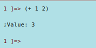
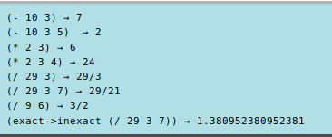
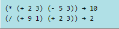
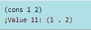
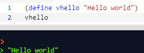
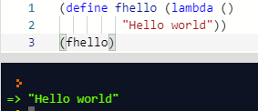
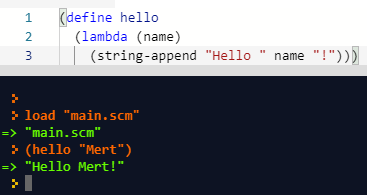
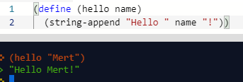
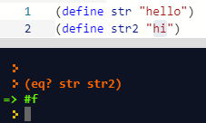
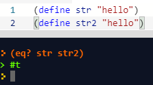

Scheme nedir?
Scheme çok anlamlı,şeffaf,küçük ve kolay bir şekilde yazılabilecek bir programlama dilidir.
Scheme problemlerin çözümünde algoritmik yaklaşımı destekler.Bu yüzdendir ki çoğu üniversitede Bilgisayara Giriş dersi olarak verilmektedir.
Birçok programlama stil ve paradigmalarını desteklediği gibi fonksiyonel ve nesneye yönelik programlama stillerini de destekler.
Scheme, olabildiğince küçük ve sade olarak tasarlanmıştır.
1975 yılında, Guy Steele ve Geral Sussman MIT laboratuarında şeffaf ve sade semantiği olan bir dil tasarlamak istemekteler.
Bu hedef doğrultusunda Scheme meydana geliyor.
Scheme,dünyada ilk fonksiyonel programlama dili olan Lambda Calculus’tan etkilenmiştir.
Syntax'ı LISP'e benzemektedir.LISP'e göre daha sade,şeffaf ve modern olarak tasarlanmak istenmiştir.
Özellikleri
Scheme programlama dili çoğu zaman oku-hesapla-yazdır döngüsü (Read-evaluate-print Loop) REPL ile anılır.
Hesap Makinesi
4 İşlem
İç içe işlemler
Liste oluşturma
Değişken tanımlama
Fonksiyon tanımlama
  Eşitlik kontrolü
 Dinlediğiniz için teşekkürler
Mert Özan
160255045